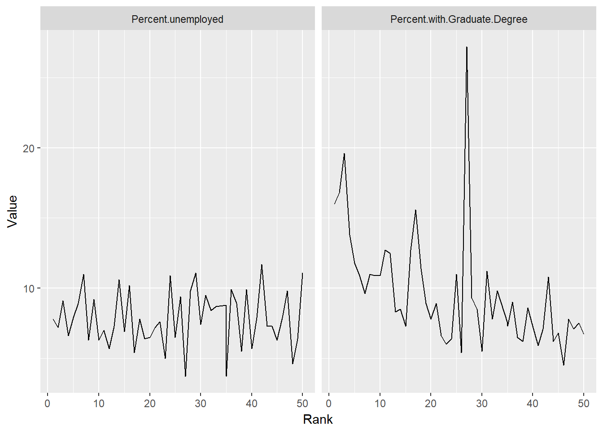

GoogleVizAssignment
Brian Grob and Ryan Strong
October 24, 2017
Applying Appropriate Packages
library(ggplot2)
library(dplyr)## Warning: package 'dplyr' was built under R version 3.4.2##
## Attaching package: 'dplyr'## The following objects are masked from 'package:stats':
##
## filter, lag## The following objects are masked from 'package:base':
##
## intersect, setdiff, setequal, unionlibrary(tidyr)## Warning: package 'tidyr' was built under R version 3.4.2library(googleVis)## Warning: package 'googleVis' was built under R version 3.4.2## Creating a generic function for 'toJSON' from package 'jsonlite' in package 'googleVis'##
## Welcome to googleVis version 0.6.2
##
## Please read Google's Terms of Use
## before you start using the package:
## https://developers.google.com/terms/
##
## Note, the plot method of googleVis will by default use
## the standard browser to display its output.
##
## See the googleVis package vignettes for more details,
## or visit http://github.com/mages/googleVis.
##
## To suppress this message use:
## suppressPackageStartupMessages(library(googleVis))library(datasets)
library(gudatavizfa17)
bcities=bcitiesIntroduction
We are given information on the 50 highest ranked cities in the United States of America. Our goal is to look at the data associated with these 50 cities and determine which factors contributed most to their rankings.
The first step in doing this was creating new columns for all of the factors that would be influenced by population of the city.
Here is the column for number of bars per 100000 people
bcities$Bars.Population=100000*bcities$Bars/bcities$PopulationHere is the column for number of restaurants per 100000 people
bcities$Restaurants.Population=100000*bcities$Restaurants/bcities$PopulationHere is the column for number of museums per 100000 people
bcities$Museums.Population=100000*bcities$Museums/bcities$PopulationHere is the column for number of libraries per 100000 people
bcities$Libraries.Population=100000*bcities$Libraries/bcities$PopulationHere is the column for number of professional sports teams per 100000 people
bcities$Pro.Sports.Teams.Population=100000*bcities$Pro.Sports.Teams/bcities$PopulationHere is the column for number of colleges per 100000 people
bcities$Colleges.Population=100000*bcities$Colleges/bcities$PopulationNext we created line graphs for all of the relevant factors against rank
bcitiesgather1=gather(bcities, "Category", "Value", c(16,17))## Warning in if (!is.finite(x)) return(FALSE): the condition has length > 1
## and only the first element will be usedGraphs of Bars per capita and Restaurants per capita against rank
ggplot(bcitiesgather1,aes(Rank,Value, fill=Rank))+geom_line(stat="identity")+
facet_wrap(~Category)Bars per capita does not appear to have an influence on city rank whereas there is an upward trend in regards to restaurants per captia and rank
bcitiesgather2=gather(bcities, "Category", "Value", c(18,19))## Warning in if (!is.finite(x)) return(FALSE): the condition has length > 1
## and only the first element will be usedGraphs of Libraries per capita and Museums per capita against rank
ggplot(bcitiesgather2,aes(Rank,Value, fill=Rank))+geom_line(stat="identity")+
facet_wrap(~Category)Both libraries per capita and museums per capita have a positive correlation with rank
bcitiesgather3=gather(bcities, "Category", "Value", c(20,21))## Warning in if (!is.finite(x)) return(FALSE): the condition has length > 1
## and only the first element will be usedGraphs of Colleges per capita and Professional Sports Teams per capita against rank
ggplot(bcitiesgather3,aes(Rank,Value, fill=Rank))+geom_line(stat="identity")+
facet_wrap(~Category)Colleges per capita has a slight upward trend with rank, but professional sports teams and rank do not have a relationship.
bcitiesgather4=gather(bcities, "Category", "Value", c(14,15))## Warning in if (!is.finite(x)) return(FALSE): the condition has length > 1
## and only the first element will be usedGraphs of latitude and longitude against rank
ggplot(bcitiesgather4,aes(Rank,Value, fill=Rank))+geom_line(stat="identity")+
facet_wrap(~Category)
Latitude and longitude are not contributing factors towards rank
bcitiesgather5=gather(bcities, "Category", "Value", c(11,13))## Warning in if (!is.finite(x)) return(FALSE): the condition has length > 1
## and only the first element will be usedGraphs of percentage of people unemployed and percentage of people with graduate degrees against rank
ggplot(bcitiesgather5,aes(Rank,Value, fill=Rank))+geom_line(stat="identity")+
facet_wrap(~Category)
Percent of people unemployed does not factor into the rank of the city whereas percentage of people with graduate degrees has a positive correlation with rank.
Graph of population against rank
ggplot(bcities,aes(Rank, Population))+geom_line(group="Rank")+geom_point()Population does not factor into the rank of the city
Graph Park Space against rank
ggplot(bcities,aes(Rank, Park.acres.per.1000.residents))+geom_line(group="Rank")+geom_point()Park Space does not factor into the rank of the city
Graph of median household income against rank
ggplot(bcities,aes(Rank, Median.household.income))+geom_line(group="Rank")+geom_point()Surprisingly, median household income is also not a major contributing factor towards rank
In summation, restaurants per capita, libraries per capita, museums per capita, colleges per capita, and percentage of people with graduate degrees seem to be the driving factors in determining city rank.
Next we created a chart displying the cities plotted on a map of the United States. The smaller the dot the higher the rank and the bigger the dot the lower the rank.
To do this, we used a googleviz geochart of the United States and ploted the cities based on their rank.
Geo <- gvisGeoChart(bcities, locationvar="City",colorvar="Rank", options=list(region="US", height=350, displayMode="markers", colorAxis="{values:[1, 17, 34, 50], colors:[\'red', \'pink\', \'orange',\'green']}") )
Geo
Data: bcities • Chart ID: GeoChartID4aa01fa85b98 • googleVis-0.6.2
R version 3.4.1 (2017-06-30) • Google Terms of Use • Documentation and Data Policy
R version 3.4.1 (2017-06-30) • Google Terms of Use • Documentation and Data Policy
Lastly, we created a chart displaying the states with a different color based on the number of cities within the state that were ranked in the top 50.
To do this, we first had to create another column relating the cities to the state in which they reside.
bcities$State=c("California", "Alaska", "Nebraska", "Missouri", "Ohio", "Virgina", "Arizona", "Arizona", "Nevada", "Texas", "Virgina", "North Carolina", "Oklahoma", "Indiana", "Colorado", "Florida", "Nebraska", "California", "New York", "California", "Texas", "Maryland", "Illinois", "Virgina", "Wisconsin", "Kentucky", "Pennsylvania", "Oklahoma", "Texas", "Ohio", "Ohio", "Hawaii", "North Carolina", "Wisconsin", "Georgia", "Missouri", "Lousiana", "Tennessee", "Minnesota", "Pennsylvania", "Minnesota", "California", "Texas", "New York", "Colorado", "Oregon", "Massachusetts", "DC", "Washington", "California")Then we created a new data frame which grouped the states by the number of cities present in this top 50 ranking.
bcitiescount=bcities%>%group_by(State)%>%summarize(number=length(State))By doing this, we were able to create a choropleth chart of the United States, where each state is shaded on the basis of how many cities within that state made it into the top 50 rankings.
GeoStates <- gvisGeoChart(bcitiescount, "State", "number",
options=list(region="US", displayMode="regions", resolution="provinces",
width=600, height=400))
GeoStates
Data: bcitiescount • Chart ID: GeoChartID4aa0374bab • googleVis-0.6.2
R version 3.4.1 (2017-06-30) • Google Terms of Use • Documentation and Data Policy
R version 3.4.1 (2017-06-30) • Google Terms of Use • Documentation and Data Policy